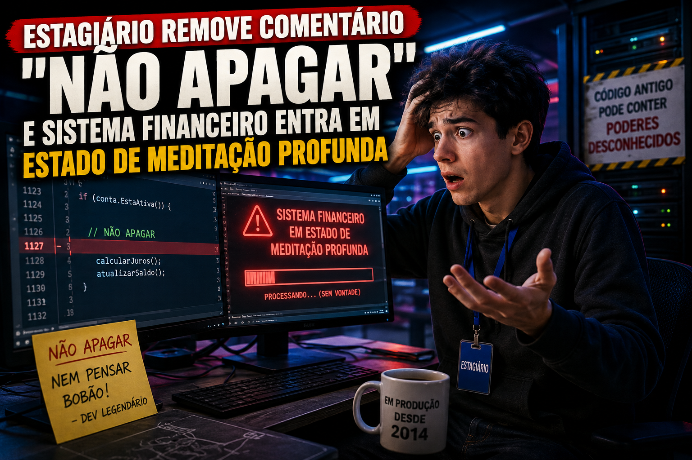

Os melhores artigos sobre programação você encontra aqui!
Programação

O que começou como uma simples correção de código terminou em uma sequência de eventos tão improvável que especialistas ainda discutem se foi um bug, uma coincidência ou uma nova forma de arte digital.
Saiba mais
Uma limpeza de código aparentemente inocente revelou que uma única linha comentada era responsável por manter anos de estabilidade em um sistema considerado crítico.